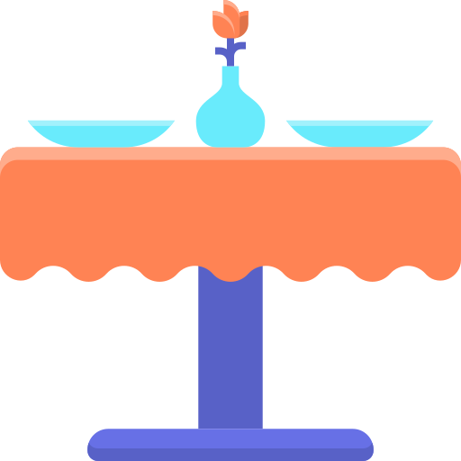

<ion-header [translucent]="true">
	<ion-toolbar>
		
		<ion-button id="btn_toolbar" (click)="CerrarSesion()">
			<ion-icon name="log-out-outline" style="transform: scaleX(-1);"></ion-icon>
		</ion-button>
	</ion-toolbar>
</ion-header>

<ion-content [fullscreen]="true">
	<ion-grid>
		<div class="contenido">
			
			<h2>Metre</h2>
			<div>
				<button (click)="IrAltaCliente()"><br><br>Agregar<br>Cliente</button>
			</div>
			<div>
				<button (click)="IrListaEspera()"><br><br>Lista<br>Espera</button>
			</div>
			<div>
				<button (click)="GestionarMesas()"><br><br>Gestionar<br>Mesas</button>
			</div>
			
		</div>
	</ion-grid>
	<ion-fab horizontal="end" vertical="bottom" >
		<ion-fab-button size="small" (click)="ActivarDesactivarSonido()">
			<ion-icon *ngIf="volumenOn" name="volume-high-outline"></ion-icon>
			<ion-icon *ngIf="!volumenOn" name="volume-mute-outline"></ion-icon>
		</ion-fab-button>
	</ion-fab>
</ion-content>

<div class="custom-loading" *ngIf="spinner">
	<div class="spinner">
		<div class="double-bounce1"></div>
		<div class="double-bounce2"></div>
	</div>
</div>
